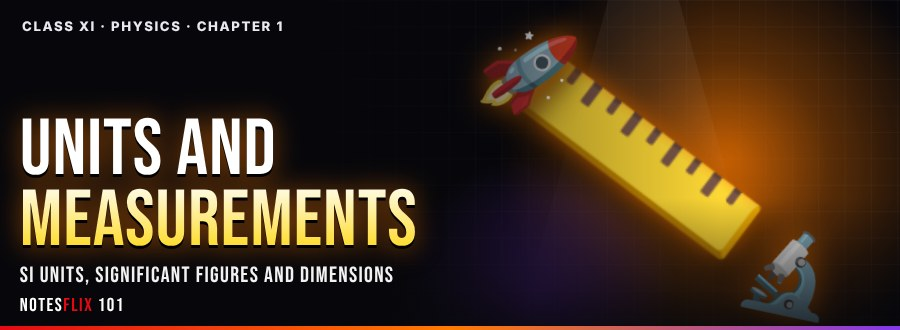
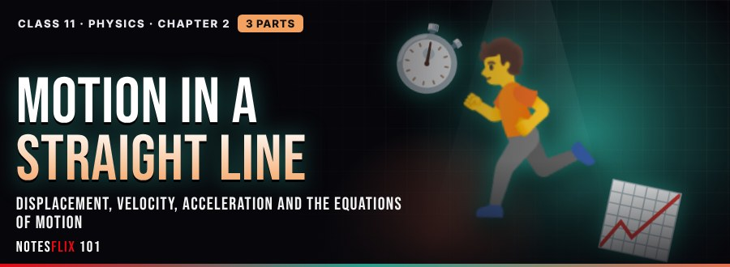
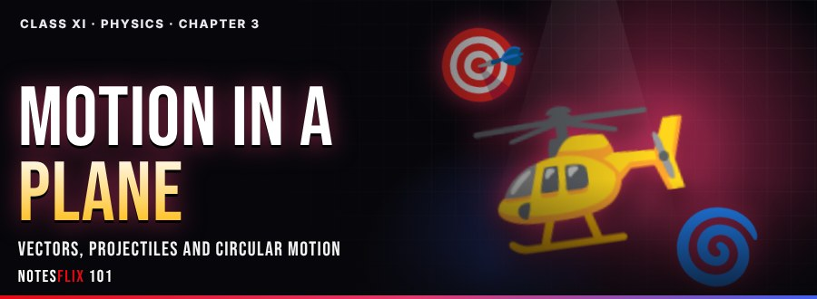
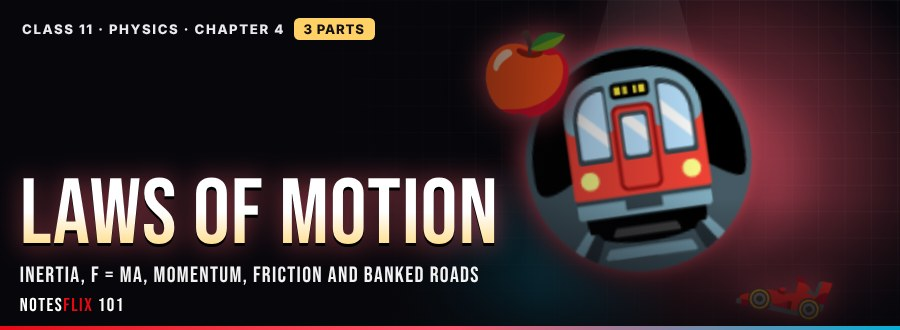
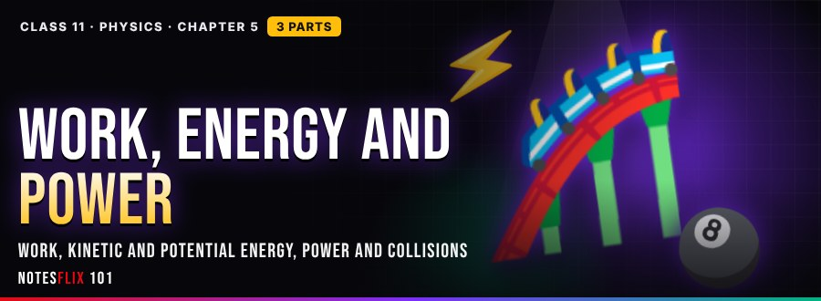
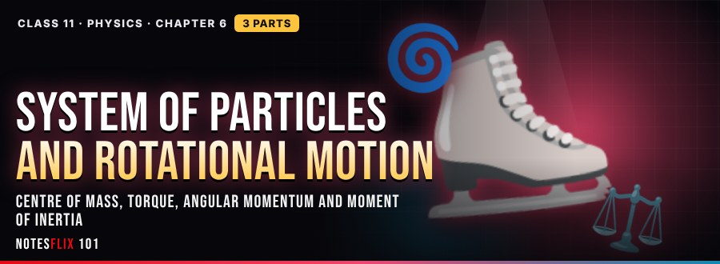

Class 11 Physics Notes
Interactive CBSE Class 11 Physics notes from Notesflix 101. They follow the CBSE syllabus and NCERT textbook for Class 11. Each chapter is broken into short parts with easy explanations, picture stories, flash cards, quizzes and board-style exam questions with model answers. All 23 parts open with a password from Notesflix 101.
Chapters

Chapter 1: Units and Measurements
SI units, significant figures and dimensions
- Units and Significant Figures (Part 1)PASSWORD — Base and derived units, SI base and supplementary units, prefixes, significant figures, rounding off, arithmetic with significant figures and uncertainty in results, with a Sig-Fig X-ray, a Sig-Fig Sprint game, a Powers of Ten slider and a Vernier callipers virtual lab. (40 min)
- Dimensions and Dimensional Analysis (Part 2)PASSWORD — Dimensions, dimensional formulae and equations, the principle of homogeneity, checking and deriving relations (pendulum), with an equation checker, a Dimension Match game, a screw gauge virtual lab and the Chapter 1 final test with certificate. (45 min)
- NCERT Exercises SolvedPASSWORD — All 17 end-of-chapter NCERT exercises of Units and Measurements, solved step by step, with hints, an answer checker for numericals and redrawn figures. (60 min)

Chapter 2: Motion in a Straight Line
Displacement, velocity, acceleration and the equations of motion
- Position and Average Velocity (Part 1)PASSWORD — Frame of reference, path length and displacement, average velocity and average speed, uniform and non-uniform motion and position-time graphs, with a Trip Builder, the Graph Match Sprint game and a graph-plotting lab with proper scales and error bars. (40 min)
- Instantaneous Velocity and Acceleration (Part 2)PASSWORD — Instantaneous velocity as dx/dt, basic differentiation, average and instantaneous acceleration, velocity-time graphs, slope and area (integration), with a Tangent Zoom, a Graph Trio, the Graph Detective game and a ticker-tape activity. (45 min)
- Uniformly Accelerated Motion (Part 3)PASSWORD — Equations of uniformly accelerated motion by graph and calculus, free fall and vertical throws, Galileo's law of odd numbers, stopping distance and reaction time, with an Equation Sandbox, a Tower Toss, the Ruler Catch game, Galileo's inclined plane and the Chapter 2 final test with certificate. (45 min)
- NCERT Exercises SolvedPASSWORD — All 18 end-of-chapter NCERT exercises of Motion in a Straight Line, solved step by step, with hints, an answer checker for numericals and redrawn figures. (60 min)

Chapter 3: Motion in a Plane
Vectors, projectiles and circular motion
- Vectors (Part 1)PASSWORD — Scalars and vectors, adding vectors by drawing and by components, unit vectors, dot and cross products, with a drag-and-drop vector playground, a 3D right-hand rule, a parallelogram-law virtual lab and a numerical generator. (35 min)
- Projectile Motion (Part 2)PASSWORD — Velocity and acceleration in a plane, motion with constant acceleration, and projectile motion: path, time of flight, maximum height and range, with a projectile launcher, a Parcel Drop game, a strobe-photo animation and a range-vs-angle virtual lab. (40 min)
- Circular Motion and Chapter Test (Part 3)PASSWORD — Uniform circular motion, angular speed, period and frequency, centripetal acceleration v²/R, with a circle simulator, a Sling Shot game, a turntable virtual activity, the 15-question Chapter 3 final assessment and a completion certificate. (40 min)
- NCERT Exercises SolvedPASSWORD — All 22 end-of-chapter NCERT exercises of Motion in a Plane, solved step by step, with hints, an answer checker for numericals and redrawn figures. (60 min)

Chapter 4: Laws of Motion
Inertia, F = ma, momentum, equilibrium, friction and banked roads
- Inertia and Newton's Second Law (Part 1)PASSWORD — Aristotle's fallacy, Galileo and inertia, Newton's first and second laws, momentum and impulse, with a metro inertia simulator, an F = ma cart lab, the Egg Drop Rescue game and an impulse-from-graph activity. (45 min)
- Third Law, Momentum and Equilibrium (Part 2)PASSWORD — Newton's third law, conservation of momentum and recoil, equilibrium of a particle, free-body diagrams, connected bodies and apparent weight in lifts, with a momentum track, a lift simulator, a free-body diagram builder game and the roller-on-incline practical. (45 min)
- Friction and Circular Motion (Part 3)PASSWORD — Static, limiting and kinetic friction, laws of friction, rolling friction and lubrication, cars on level and banked roads, with a friction pull test, a banked-curve simulator, the Hairpin Rally game, the limiting-friction practical and the Chapter 4 final test with certificate. (45 min)
- NCERT Exercises SolvedPASSWORD — All 23 end-of-chapter NCERT exercises of Laws of Motion, solved step by step, with hints, an answer checker for numericals and redrawn figures. (60 min)

Chapter 5: Work, Energy and Power
Work, kinetic and potential energy, power and collisions
- Work, Kinetic Energy and Power (Part 1)PASSWORD — Scalar product, work done by a constant force, positive, negative and zero work, kinetic energy, the work-energy theorem, work by a variable force and power, with a work-angle lab, an F-x area explorer, the Work Sign Rush game and a stair-climb power activity. (45 min)
- Potential Energy and Conservation (Part 2)PASSWORD — Potential energy, conservative and non-conservative forces, conservation of mechanical energy, spring potential energy and motion in a vertical circle, with an energy skate bowl, a spring launcher, the Loop Launch game and the double inclined plane activity. (45 min)
- Collisions (Part 3)PASSWORD — Elastic and inelastic collisions in one and two dimensions, perfectly inelastic collisions and KE loss, neutron moderators and the 90 degree rule, with a collision track, the Pocket the Ball game, the pendulum energy-dissipation activity and the Chapter 5 final test with certificate. (45 min)
- NCERT Exercises SolvedPASSWORD — All 23 end-of-chapter NCERT exercises of Work, Energy and Power, solved step by step, with hints, an answer checker for numericals and redrawn figures. (60 min)

Chapter 6: System of Particles and Rotational Motion
Centre of mass, torque, angular momentum and moment of inertia
- Centre of Mass (Part 1)PASSWORD — Centre of mass of two particles, many particles and rigid bodies including a uniform rod, total momentum and the motion of the centre of mass, with a CM Balancer, an exploding firework, the Mobile Maker game and a plumb-line lamina activity. (40 min)
- Torque, Angular Momentum and Equilibrium (Part 2)PASSWORD — Torque as r x F, angular momentum, tau = dL/dt, conservation of angular momentum, equilibrium of rigid bodies, couples and the principle of moments, with a Torque Door, a Spin Studio, the See-saw Balance game and the metre-scale principle of moments lab. (45 min)
- Rotational Motion and Moment of Inertia (Part 3)PASSWORD — Rotation about a fixed axis, equations of rotational motion, moment of inertia and radius of gyration, moments of inertia of simple bodies, torque = I alpha, power and the linear-rotational comparison, with a Bead Spinner, a Spin-Up Lab, the Inertia Ranker game, a flywheel activity and the Chapter 6 final test with certificate. (45 min)
- NCERT Exercises SolvedPASSWORD — All 17 end-of-chapter NCERT exercises of System of Particles and Rotational Motion, solved step by step, with hints, an answer checker for numericals and redrawn figures. (60 min)
Frequently asked questions
Are the Class 11 Physics notes free?
All 23 parts open with a password from Notesflix 101.
Which syllabus do these Class 11 Physics notes follow?
They follow the CBSE syllabus and NCERT textbook for Class 11. Every chapter is split into short interactive parts with simple explanations, flash cards, quizzes and board-style exam questions with model answers.
How many chapters are covered?
6 chapters: Units and Measurements; Motion in a Straight Line; Motion in a Plane; Laws of Motion; Work, Energy and Power; System of Particles and Rotational Motion.
How do I get the password for locked notes?
Email support@notesflix101.com with your name, class, school and the Gmail ID you sign in with. The same password opens every locked Physics note.